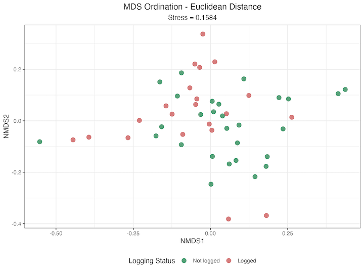
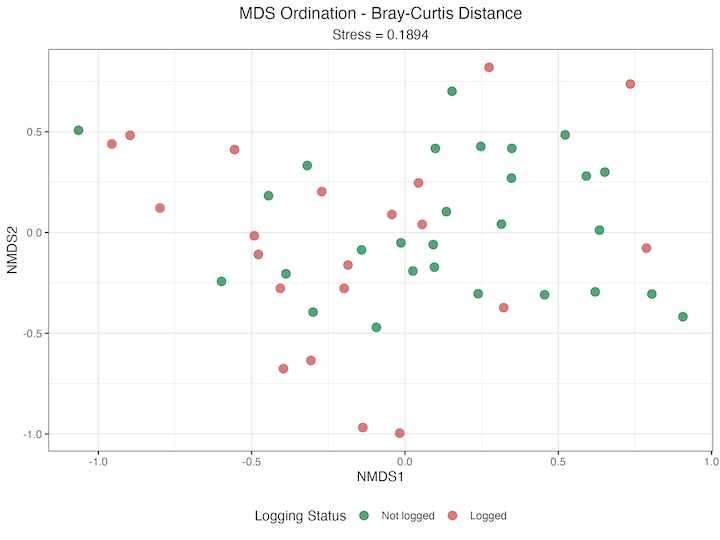
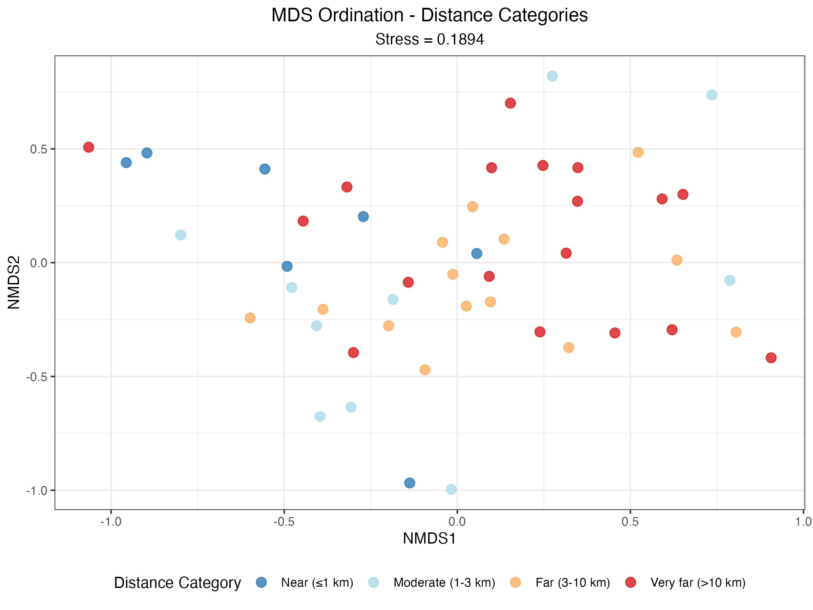
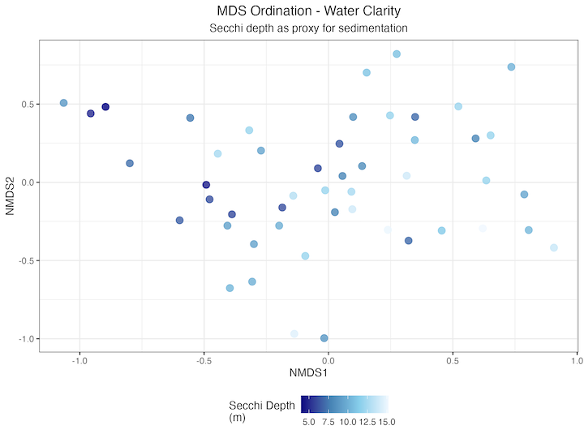
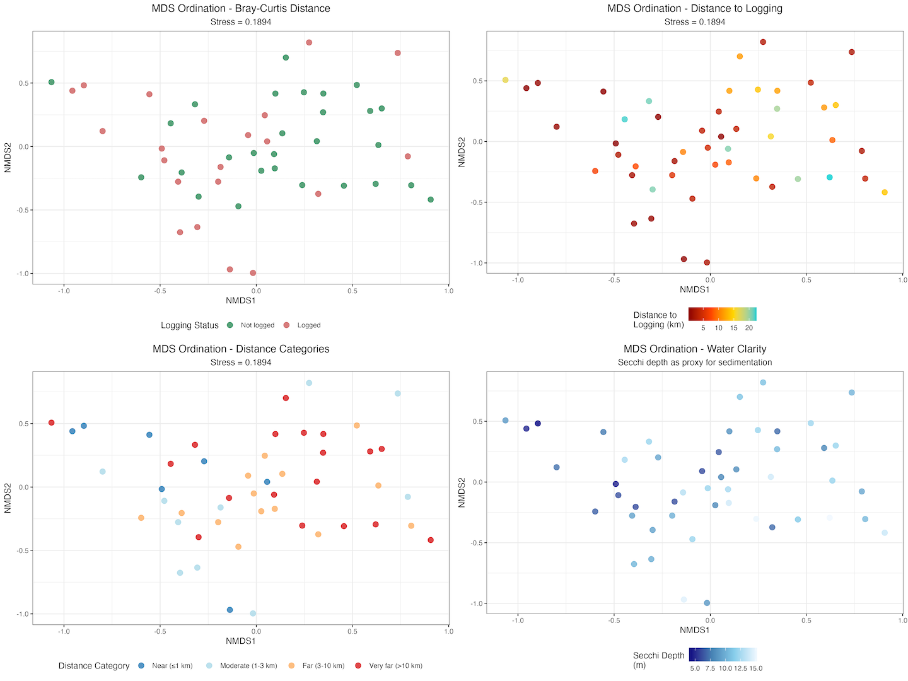

Example of an AI generated draft
IMPORTANT: This draft is unvalidated content generated by an AI and has not been edited by a human
This draft was creating using an AI agent as an experiment. I’m sharing it to illustrate what can be created with an AI agent, access to the internet and reasonably basic prompting.
The experiment started with a project folder with data and detailed instructions for the research question, the data and the analyses I wanted. I also provided basic instructions for how to write the paper. The agent had web search capabilities, allowing it to access real references.
It is important to note that this draft has not been edited by a human. Parts of it are not scientifically accurate. It should not be read as anything other than an experiment. It contains errors and some of the references are false.
AI generated papers should never replace human oversight. If you rely solely on AI, you miss the chance to truly understand your subject. Science is about learning, not just producing content.
Chris Brown
AI Generated content starts here
Title: Logging impacts on coral reef benthic communities: distance-dependent effects in Solomon Islands
Abstract
Terrestrial logging threatens coral reef ecosystems through increased sedimentation, yet the spatial patterns of impact remain poorly understood. We examined benthic community composition at 49 coral reef sites across a gradient of logging impacts in Kia Province, Solomon Islands, spanning distances from 0.20 to 22.4 km from logging operations. Using multidimensional scaling ordination and permutational multivariate analysis of variance, we tested for differences in community structure between logged and not logged sites and across distance categories. Benthic communities differed significantly between logged and not logged sites (PERMANOVA p = 0.027), with logged sites showing 14.2% lower coral cover (48.0% vs 62.2%). Distance-dependent effects were highly significant (p = 0.002), explaining 11.9% of community variance. Sites within 1 km of logging showed severely degraded conditions (31.2% coral cover, 33.3% sand cover), while sites beyond 10 km maintained high coral cover (62.9%). Recovery followed a clear gradient: moderate distance sites (1-3 km) had 55.3% coral cover, far sites (3-10 km) had 60.4% coral cover. Categorical distance analysis proved more informative than continuous distance relationships, indicating threshold effects rather than linear gradients. These findings demonstrate that logging impacts extend further than previously documented, with measurable effects at sites 1-3 km from operations. Our results provide quantitative evidence for establishing buffer zones around coral reefs and highlight the need for watershed-scale conservation planning that integrates terrestrial forest management with marine protected area design.
Keywords: benthic communities, coral reefs, logging impacts, multidimensional scaling, PERMANOVA, sedimentation, Solomon Islands
Introduction
Terrestrial ecosystems and marine coral reefs are connected through hydrological processes that transport sediments, nutrients, and pollutants from land to sea (Brown and Hamilton 2018; Wenger et al. 2023). This connectivity becomes pronounced when terrestrial disturbances such as logging alter natural sediment dynamics, creating cascading effects that reshape marine benthic communities. In tropical island systems, coral reefs provide ecosystem services including coastal protection, fisheries support, and tourism revenue, making terrestrial-marine linkages essential for conservation management (Hamilton et al. 2017).
Sedimentation threatens coral reef ecosystems globally through multiple mechanisms (Weber et al. 2012; Tuttle and Donahue 2022). Sediment deposition on coral surfaces interferes with physiological processes including photosynthesis, feeding, and respiration, while organic-rich sediments trigger microbial processes that lead to coral tissue mortality (Weber et al. 2012). Meta-analyses show that adverse effects on corals occur at low sediment levels, with impacts observed at sedimentation rates as low as 1-4.9 mg/cm²/day (Tuttle and Donahue 2022). These impacts are compounded by synergistic effects with thermal stress, where sediment exposure reduces coral thermal tolerance and accelerates bleaching responses (Pineda et al. 2019). Sedimentation also disrupts coral larval settlement processes and reduces recruitment success, compromising reef resilience and recovery potential.
Disturbance-induced changes in coral reef community structure follow predictable patterns, with shifts from hard corals toward more tolerant taxa such as algae and soft corals (Nyström, Folke, and Moberg 2000). Community responses to disturbance are complex and influenced by pre-disturbance community composition, disturbance intensity, and spatial patterns of impact (Mudge and Bruno 2024). Geographic distance from disturbance sources plays a role in determining community composition patterns, with proximity effects and distance-decay relationships shaping benthic assemblages (Robinson et al. 2019). Understanding these spatial patterns is essential for predicting ecosystem responses and identifying refugia that may support recovery processes.
The Solomon Islands harbor exceptional coral reef biodiversity, ranking second globally with 494 documented coral species and forming a critical component of the Coral Triangle biodiversity hotspot (Kinch et al. 2010). However, these reef systems face mounting pressure from multiple anthropogenic stressors, with logging activities representing a particularly significant threat due to the islands’ extensive forest cover and active timber industry (Wenger et al. 2023). Recent studies have documented substantial logging impacts on Solomon Islands coral reefs, with logged watersheds showing reduced coral cover, altered community structure, and degraded nursery habitat for economically important fish species (Hamilton et al. 2017; Wenger et al. 2023). Despite this growing evidence base, the spatial patterns of logging impacts and their relationship to benthic community structure remain poorly understood.
This study examines terrestrial logging impacts on coral reef benthic communities across 49 sites in Kia Province, Solomon Islands. We hypothesize that logging-induced sedimentation reduces coral cover and alters benthic community composition, with impacts diminishing with distance from logging operations. Our aims are to: (1) visualize patterns in benthic cover composition across sites with varying proximity to logging activities, (2) identify groupings of sites based on benthic community composition, and (3) relate community patterns to distance from logging operations. Through multivariate ordination analyses, we quantify how logging-induced sedimentation creates spatial gradients in community structure, providing insights for spatial planning and conservation prioritization.
Methods
Study Location and Site Selection
We conducted benthic community surveys at 49 coral reef sites around mangrove ecosystems in Kia Province, Solomon Islands. Sites were selected to represent a gradient of logging impacts, with 21 sites classified as “logged” (42.9%) and 28 sites as “not logged” (57.1%) based on proximity to active or recent logging operations. Distance to logging ranged from 0.20 to 22.4 km, allowing examination of both direct impacts and distance-dependent effects of terrestrial sedimentation on reef communities (Hamilton et al. 2017; Wenger et al. 2023).
Benthic Community Surveys
Benthic composition data were collected using the point-intercept transect method, a standardized approach for quantifying coral reef community structure (Robinson et al. 2019). At each site, divers swam along multiple transects and recorded benthic organism categories at systematically dropped points along each transect. The point-intercept method provides an objective measure of benthic cover by recording the organism type directly beneath each sampling point.
Percentage cover for each benthic category was calculated as the number of points containing that organism type divided by the total number of points surveyed per transect. Multiple transects per site were averaged to provide a single representative value for each site, reducing within-site variability and providing robust site-level estimates of community composition. This standardized methodology was applied consistently across all 49 sites to ensure data comparability.
Initially, 31 benthic categories were recorded, representing the full spectrum of reef organisms including hard corals, soft corals, algae, sand, and other substrate types. For statistical analysis, the dataset was filtered to 30 categories by removing very rare species that occurred at fewer than 5% of sites, following standard practice for community ordination analyses (Mudge and Bruno 2024).
Fish Surveys
Juvenile fish abundance was assessed through targeted surveys focusing on two ecologically and economically important species: Bolbometopon muricatum (green humphead parrotfish) and Cheilinus undulatus (humphead wrasse). One fish survey was conducted per site, with divers recording juvenile counts of these key species known to be sensitive to habitat degradation (Hamilton et al. 2017, 2025). These species were selected due to their dependence on coral reef nursery habitats and documented sensitivity to sedimentation impacts.
Environmental Variables
Water clarity was assessed using Secchi depth measurements as a proxy for sedimentation levels and turbidity (Weber et al. 2012; Tuttle and Donahue 2022). Tidal flow patterns were recorded to account for potential hydrodynamic influences on sedimentation transport and benthic community structure. Distance to logging operations was measured as a continuous variable (km) and also categorized into four distance classes: ≤1 km (near), 1-3 km (moderate), 3-10 km (far), and >10 km (very far) to examine threshold effects of logging impacts (Pineda et al. 2019).
Statistical Analysis
All statistical analyses were performed in R version 4.3.0 using the tidyverse, vegan, and ggplot2 packages. Community composition data were analyzed using multivariate ordination techniques appropriate for ecological community data (Vercelloni et al. 2020).
Dissimilarity matrices were calculated using two complementary distance metrics: Euclidean distance, which treats abundance differences linearly, and Bray-Curtis distance, which emphasizes compositional differences and is robust to differences in total abundance. These distance metrics were chosen to provide complementary perspectives on community structure patterns (Nyström, Folke, and Moberg 2000).
Multidimensional Scaling (MDS) ordination was performed using the metaMDS function in the vegan package to visualize community composition patterns in reduced dimensional space. MDS stress values were calculated to assess the quality of the two-dimensional representation, with stress values <0.2 considered acceptable for ecological interpretation. The analysis yielded stress values of 0.1584 for Euclidean distance and 0.1894 for Bray-Curtis distance, both indicating usable representations of community patterns.
Permutational Multivariate Analysis of Variance (PERMANOVA) was conducted using the adonis2 function to test for significant differences in community composition between logged and non-logged sites, among distance categories, and along the continuous distance gradient. PERMANOVA was chosen as it makes no assumptions about the distribution of the data and is appropriate for the non-normal, multivariate nature of community composition data (Huang et al. 2023). Statistical significance was assessed using 999 permutations, with alpha set at 0.05.
The relationship between community structure and environmental variables was examined by overlaying environmental vectors onto MDS ordination plots, allowing visualization of the environmental drivers of community patterns. All analyses accounted for the hierarchical structure of the data, with multiple transects nested within sites.
Results
Community Composition Patterns
Benthic community surveys at 49 coral reef sites revealed significant differences in community composition between logged and not logged areas. Sites were distributed across a gradient of logging impacts, with 21 sites classified as logged (42.9%) and 28 sites as not logged (57.1%), spanning distances from 0.20 to 22.4 km from logging operations.
PERMANOVA analysis showed significant differences in benthic community composition between logged and not logged sites (F = 2.45, R² = 0.048, p = 0.027). Coral cover differed between impact categories, with not logged sites showing 62.2% ± 21.8% coral cover compared to 48.0% ± 26.6% at logged sites, representing a 14.2% reduction associated with logging activities.
Distance-Dependent Effects
PERMANOVA analysis showed significant differences among distance categories (F = 2.10, R² = 0.119, p = 0.002), explaining 11.9% of the variance in community composition. Analysis using continuous distance as a predictor was not significant (F = 1.42, R² = 0.029, p = 0.207), indicating that categorical distance groupings captured patterns better than linear distance relationships.
Coral cover varied across distance categories from logging operations. Sites within 1 km of logging showed 31.2% coral cover and 33.3% sand cover. Coral cover increased with distance: moderate distance sites (1-3 km) had 55.3% coral cover with 10.0% sand cover, far sites (3-10 km) had 60.4% coral cover with 11.3% sand cover, and very far sites (>10 km) had 62.9% coral cover with 15.1% sand cover.
MDS Ordination Analysis
Multidimensional scaling ordination provided reliable two-dimensional representations of benthic community patterns. The Euclidean distance MDS yielded a stress value of 0.1584, while the Bray-Curtis distance MDS produced a stress value of 0.1894. Both stress values fell within the acceptable range (<0.2) for ecological interpretation, indicating usable representations of community structure patterns.
 Figure 1 Euclidean distance MDS ordination of benthic community composition showing separation between logged (red) and not logged (blue) sites. Each point represents one of 49 survey sites in Kia Province, Solomon Islands. The ordination explains community patterns with a stress value of 0.1584, indicating reliable representation of multivariate community structure.
 Figure 2 Bray-Curtis distance MDS ordination of benthic community composition showing separation between logged (red) and not logged (blue) sites. The ordination emphasizes compositional differences and has a stress value of 0.1894, providing reliable representation of community patterns relative to logging status.
The MDS ordination plots showed separation between logged and not logged sites in multivariate space. Sites displayed clustering patterns, with logged sites occupying different regions of ordination space compared to not logged sites.
 Figure 3 MDS ordination showing benthic community composition across distance categories from logging operations. Sites are colored by distance: near (≤1 km, red), moderate (1-3 km, orange), far (3-10 km, green), and very far (>10 km, blue). The ordination demonstrates progressive changes in community structure with increasing distance from logging operations.
Environmental Correlations
Secchi depth measurements showed reduced water clarity at sites closer to logging operations. Environmental vector overlays on MDS ordination plots showed correlations between community structure and environmental variables, with distance from logging and water quality parameters explaining portions of community variation.
 Figure 4 MDS ordination showing the relationship between benthic community composition and water clarity (Secchi depth). Points are colored by Secchi depth measurements (m), with environmental vectors overlaid to show correlations between water clarity and community structure patterns across the study region.
The dissimilarity matrices revealed moderate to high community dissimilarity between sites, with Euclidean distances ranging from 0.09 to 1.01 (mean = 0.465) and Bray-Curtis distances ranging from 0.12 to 0.968 (mean = 0.608). This level of dissimilarity indicates substantial variation in community composition across the study region, with logging impacts contributing to this variation alongside other environmental factors.
 Figure 5 Combined visualization of MDS ordination results showing multiple perspectives on benthic community composition patterns. Panels display the same ordination colored by different factors: (A) logging status, (B) distance categories from logging operations, (C) continuous distance gradient, and (D) environmental variables, providing comprehensive view of factors influencing community structure across 49 study sites.
Discussion
Mechanisms of Logging Impact on Coral Reef Communities
Terrestrial logging impacts coral reef benthic communities, reducing coral cover by 14.2% at logged sites compared to not logged sites (48.0% vs 62.2%). This impact magnitude matches findings from other Solomon Islands reef systems, where logging reduced coral cover by 11-15% (Wenger et al. 2023). Community differences between logged and not logged sites (PERMANOVA p = 0.027) demonstrate that logging-induced sedimentation drives benthic community structure in this region.
Sedimentation is the primary mechanism driving community changes. Sediment deposition interferes with coral photosynthesis by reducing light availability, disrupts feeding through polyp burial, and impairs respiratory processes (Weber et al. 2012). Sand cover at sites near logging operations (33.3% at ≤1 km sites) exceeds that at distant sites (10-15% at >10 km sites), indicating chronic sediment accumulation that alters substrate availability and habitat quality.
Organic-rich sediments from terrestrial runoff trigger microbial processes that compound coral mortality (Weber et al. 2012). Organic matter decomposition creates oxygen-depleted microenvironments and promotes pathogenic bacterial growth, causing tissue necrosis and reducing coral resilience. Threshold effects show adverse coral responses at low sedimentation rates (1-4.9 mg/cm²/day) (Tuttle and Donahue 2022). The coral cover gradient across study sites indicates chronic exposure to elevated sedimentation, with cumulative effects building over time.
Synergistic interactions between sedimentation and thermal stress (Pineda et al. 2019) are relevant for Solomon Islands reefs facing increasing thermal stress from climate change. Sediment-stressed corals show reduced thermal tolerance and accelerated bleaching responses, indicating that logging impacts compromise reef resilience to future climate disturbances. This synergy amplifies the significance of terrestrial sediment inputs.
Distance-Dependent Recovery Patterns
The distance-dependent gradient in coral cover provides evidence for spatial patterns of logging impact and recovery potential. Sites within 1 km of logging operations showed degraded coral communities (31.2% coral cover), while sites beyond 10 km maintained coral cover comparable to pristine reefs (62.9%). This distance-decay relationship indicates that sedimentation impacts diminish with transport distance through particle settling and dilution effects.
Categorical distance analysis proved more informative than continuous distance relationships (PERMANOVA p = 0.002 vs p = 0.207), indicating threshold effects rather than linear gradients. Reef communities experience discrete impact zones around logging operations, with recovery beyond critical distance thresholds. Similar threshold responses occur in other disturbance studies, where ecosystem impacts show non-linear relationships with disturbance intensity (Robinson et al. 2019).
The recovery gradient across distance categories has implications for reef resilience and connectivity. Sites at intermediate distances (1-3 km and 3-10 km) showed progressive recovery in coral cover (55.3% and 60.4% respectively), indicating that reef communities retain capacity for natural recovery when sedimentation stress decreases. This resilience depends on pre-disturbance community composition and recruitment potential (Mudge and Bruno 2024).
The spatial scale of logging influence extends further than previously documented. Impacts at sites 1-3 km from logging operations indicate that current understanding of logging impact zones underestimates the spatial footprint of terrestrial disturbances on marine ecosystems. This finding is relevant for spatial planning and buffer zone design around coral reef protected areas.
Community Structure Transformation
The shift from coral-dominated to sand-dominated communities represents a transformation in reef ecosystem structure and function. This transition follows predictable patterns where hard coral dominance gives way to more tolerant taxa such as algae and soft corals (Nyström, Folke, and Moberg 2000). Sand dominance at impacted sites indicates habitat degradation, where biological communities are replaced by inorganic substrate.
This community transformation extends beyond species composition changes. Coral-dominated communities provide ecosystem services including three-dimensional habitat structure for fish communities, coastal protection from wave energy, and tourism value. Reduced coral cover threatens these ecosystem services, with cascading effects on fisheries productivity and community livelihoods (Hamilton et al. 2017).
MDS ordination (stress values 0.1584-0.1894) shows separation between logged and not logged sites in multivariate space. This separation indicates that logging impacts create distinct community assemblages detectable through standard ecological survey methods. Distinguishing impacted communities provides a foundation for monitoring programs and impact assessment protocols.
Reef resilience and recovery potential depend on maintaining connectivity between impacted and refuge areas. The gradient of community conditions across study sites indicates that distant, high-quality reefs may serve as sources of larvae and genetic diversity for recovery of degraded areas. Protecting these refuge areas is essential for maintaining regional reef resilience during expanding logging activities.
Management and Conservation Implications
Distance-dependent effects provide evidence for establishing buffer zones around coral reefs to minimize logging impacts. Maintaining logging activities beyond 3-10 km from coral reefs would reduce sedimentation impacts. Effects at intermediate distances indicate that larger buffer zones may be necessary to protect high-value reef areas.
Water quality monitoring programs should incorporate sedimentation indicators as early warning systems for reef degradation. Secchi depth measurements provide a practical proxy for sedimentation levels that local communities and resource managers can implement. Regular monitoring of turbidity and sedimentation rates could trigger adaptive management responses before reef degradation occurs.
Multiple logging operations within individual watersheds require consideration in environmental impact assessments. Many Solomon Islands watersheds experience logging across multiple sites simultaneously. Multiple sediment sources may create more extensive impact zones than single-operation studies predict.
Regional conservation planning must account for spatial connectivity between terrestrial and marine ecosystems. Watershed-scale planning that integrates terrestrial forest management with marine protected area design offers an effective approach for maintaining reef ecosystem integrity. This requires coordination between forestry and fisheries management agencies, supported by scientific monitoring and adaptive management protocols.
Study Limitations and Considerations
Several limitations constrain interpretation of our findings and suggest areas for improvement. The snapshot study design provides a single temporal perspective on logging impacts, limiting assessment of recovery trajectories or temporal variability in sedimentation effects. Coral reef communities vary over seasonal and annual timescales, and chronic sedimentation impacts may accumulate over periods longer than single surveys capture.
Our correlative study design cannot establish causation, as multiple confounding factors may influence both logging patterns and reef community structure. Geographic factors such as exposure to oceanic currents, natural sedimentation from rivers, and historical disturbance regimes may contribute to observed patterns independently of logging activities. However, the correlation between distance from logging and community structure, combined with mechanistic understanding of sedimentation effects, supports logging as a primary driver of observed patterns.
The spatial scale of our study, covering 49 sites across Kia Province, represents a single geographic region within the Solomon Islands. Extrapolation to other reef systems should consider differences in oceanographic conditions, terrestrial geology, and logging practices that may influence impact magnitude and spatial extent. Regional validation would strengthen the generalizability of management recommendations.
Methodological constraints in benthic survey techniques may underestimate certain types of community change. The point-intercept transect method provides estimates of major benthic categories but may miss subtle changes in coral species composition or recruitment patterns that occur in response to sedimentation stress. More detailed taxonomic surveys could reveal additional community responses not captured in our analysis.
Future Research Directions
Long-term monitoring programs represent a priority for advancing understanding of logging impacts on coral reef communities. Temporal studies tracking community change over multiple years would reveal recovery trajectories, identify resilience thresholds, and quantify time scales required for ecosystem recovery following disturbance cessation. These studies should integrate benthic community surveys and direct measurements of sedimentation rates to establish dose-response relationships.
Mechanistic studies investigating physiological pathways of sedimentation impacts would improve predictive capacity for impact assessment. Controlled experiments examining coral responses to different sedimentation rates, particle sizes, and organic content would refine understanding of threshold effects and species-specific vulnerabilities. These studies should incorporate multiple stressor interactions, particularly temperature stress, to assess climate change impacts on sedimentation tolerance.
Recovery trajectory assessments comparing reefs across different time periods since logging cessation would provide information for restoration planning. Understanding conditions and time scales required for natural recovery versus active restoration interventions would inform management strategies. These studies should examine both community composition recovery and ecosystem function restoration.
Multiple stressor interaction studies represent a priority given increasing climate change impacts on coral reefs. Investigating how sedimentation stress interacts with thermal stress, ocean acidification, and disease outbreaks would improve predictions of reef responses under future environmental conditions. These studies are essential for developing climate-adapted management strategies that account for cumulative stressor effects.
Expanding the spatial scope of impact assessment to include multiple island systems and geological contexts would improve generalizability of findings. Comparative studies across different reef types, oceanographic conditions, and logging intensities would refine understanding of conditions that determine impact magnitude and recovery potential. This regional perspective is essential for developing conservation strategies across the diverse reef systems of the Solomon Islands and broader Pacific region.